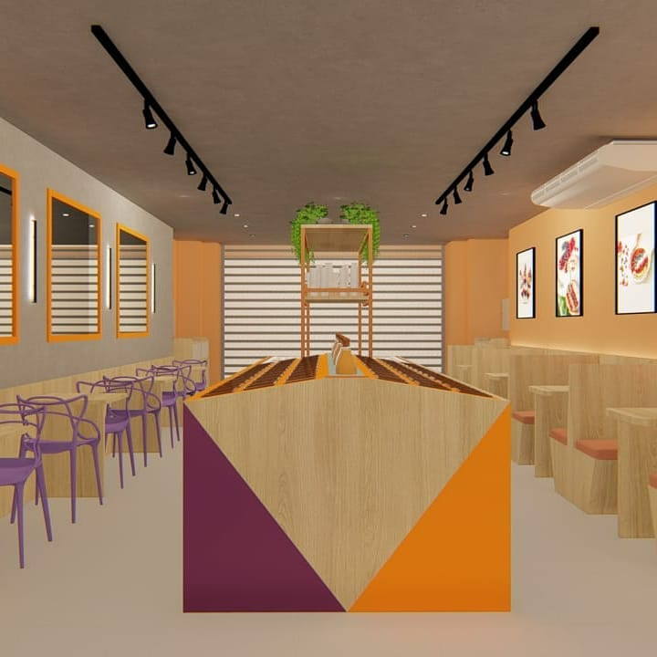

FRANQUIA AÇAÍ Mr. FRUIT
Descrição do Projeto
Franquia: AÇAÍ Mr. FRUIT
Proprietários: @rogerimduacaifshow, @karolinanantes, @hudsonvie
Projeto localizado na cidade de Fortaleza - Ceará
Este projeto trata-se de uma nova franquia executada pelo nosso escritório, onde seguimos algumas exigências solicitadas pelos franqueados, sendo elas: - As cores utilizadas que possuem um forte poder energético. - Elementos de decoração como espelhos e ripado presente na fachada, bem como, alguns mobiliários.
Na execução do projeto, pensamos em um melhor layout para atender as necessidades mencionadas pelos clientes, afim de transformar o espaço em um local convidativo e receptivo para todos.
Um pedido especial foi a utilização de cores vibrantes.
←Voltar ao Trabalhos